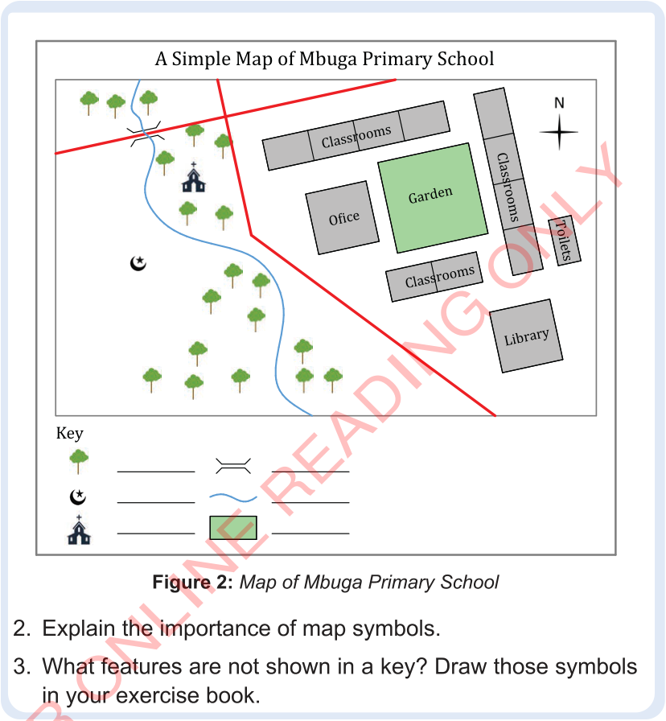

Figure 2: Map of Mbuga Primary School
2. Explain the importance of map symbols.
3. What features are not shown in a key? Draw those symbols in your exercise book.

2. Explain the importance of map symbols.
3. What features are not shown in a key? Draw those symbols in your exercise book.